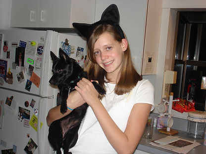

On Sacred Imagination
My friend Samantha hosts a "church" every Sunday where we gather to discuss personal and challenging topics that are weighing on us. This is a deeply spiritual experience that has connected me with amazing people in San Juan, but it is not tied to any deity or organized religion. This week she asked me to give a sermon so I spoke about the importance of imagination. This was my talk:
I had a huge imagination as a kid.
I loved Harry Potter, Lord of the Rings, everything by Tamara Pierce, Ella Enchanted, the Secret of Platform 13, Redwall, and pretty much everything else.
Many of my childhood memories are of me and my friend Camila exploring the woods.
We would find a hollow tree or a particularly enticing root and we would build a fort. Then we would try to make things fly with the power of our minds.
For example, we would stare at a leaf as hard as we could hoping it would move. One time I remember we were on the Cape and we were staring at a paper bag and then suddenly it flew up into the air, somersaulted and then landed 6 feet away. I've never in my life been so excited. We made it move.
Every night I would dream about flying, casting spells, building protective bubbles and putting out fires with my mind. Every night was a new adventure.
You probably won't be surprised that I truly believed that I would get a Hogwarts letter around the age of 11.
When that didn't happen, I continued living in my world of whimsy, but it felt just a little bit less real, a little bit less top of mind.

Having to stay in middle school instead of going to Hogwarts sucked.
I excelled at school and sports so I put all my effort towards being popular. I lost touch with Camila.
I wrote Harry Potter fan fiction in secret at night because my friends were mean and I was worried what would happen if they found out.
Over time as my amount of schoolwork grew and the 7th Harry Potter book had come out, I stopped reading or writing fantasy at all.
When I got to high school, I made a better group of friends, girls who wouldn't have laughed at me for my fantasies, but my imagination had started to fade away.
Spending time imagining things that clearly weren't real felt like a waste of time when I was focusing on my friends, on sports, on my boyfriends and on my grades.
Late in high school I tried to read and write fantasy again, it was my new years resolution in 2009, but I found I couldn't suspend disbelief long enough to enjoy a story.
I was happy, though.
I didn't miss imagination because I kind of forgot what it was like. The one thing that sucked was I had black-and-white, boring, normal day-to-day dreams.
So I went to college and I graduated and I started my company.
This is where things got rough.
Suddenly every day was different and the problems were never-ending but my imagination felt like an unused muscle so I was constantly asking others for guidance and advice.
Over time as I played with mockups, pivoted the company and built our brand, I started to feel this itch in the back of my head.
I felt like I wasn't good enough because I didn't have enough imagination.
So I started reading fantasy again.
I reread Harry Potter, the Hunger Games, the Hobbit, Divergent and the Uglies. I highly recommend rereading the Hunger Games as an adult. I think it will be some of the inspiration for the next company I want to build.
More recently I read A Deadly Education, Ready Player One, Mexican Gothic, Spinning Silver, and the Selection. I also highly recommend each one.
I also started writing again. I've written a few blog posts, not nearly enough, I've been more active on social media and I've been extremely slowly working on a novel.
As you probably know, I ran my company for 5 years and I sold it to a Puerto Rican company in December.
Moving to Puerto Rico never would have happened without my burgeoning imagination.
The world is brighter here than Boston and the fruit trees, waterfalls and colorful plants remind me of the candy forest in Willy Wonka.
As I've become more imaginatorily confident (I made up that word), I have experimented a tiny bit with drugs, I have been seeking out interesting people who are different than my boston friends and I have been loving these amazing new experiences.
That being said, trying to resuscitate an imagination is not easy.
I am still too quick to judge things and my natural response to new ideas is to think that they are weird.
I am working on giving myself grace, though.
A few months ago I had never thought about communal living, polyamory, shrooms, crystals, friends who are shamans or an itinerant lifestyle.
A few years ago I would have thought "this won't work" instead of "why might this work" when looking at new companies.
I appreciate you, my Puerto Rico friends, for teaching me about your passions and for sharing with me your dreams. My dreams have gotten brighter and much more exciting since being here.
In the last few months, I pierced my nose, dyed my hair, got way too high on a ton of weed and tried extremely ineffective shrooms.
I've also come up with 100+ whimsical company ideas I might really want to work on, I've gotten obsessed with UFOs and the metaverse and I am constantly dreaming about what the future could look like.
Prep school Kendall would be horrified but she was lame and I'm greatly enjoying my newfound imagination.

For the rest of our time together, I led our "church" in an exercise on sacred imagination. This is super fun to do with friends! I learned about this exercise from the podcast "Harry Potter and the Sacred Text".
Sacred Imagination is traditionally a Christian exercise in which a person imagines what it would be like to be in a biblical scene with the goal of better knowing and loving G-d. St. Ignatius wrote the first instructions for this practice after imagining himself in the manger scene at Christ's birth and becoming deeply moved by this experience.
Here is how the exercise worked for us:
I selected a few non-religious passages that I believe hold meaning.
I gave context for a passage and then someone else read it twice aloud so that the story and the details of the story became familiar.
While the passage was being read, we all closed our eyes and reconstructed the scene in our imaginations. We tried to see what was going on and we watched the people in the scene.
I asked some of these questions, but mostly wanted to hear what was in our community's hearts:
- What are you doing in the scene?
- Are you an observer or are you one of the key players?
- What do you see?
- What do you hear?
- What do you smell?
- How do you feel?
- How do others seem to feel?
- What do you learn from these feelings?
- How does this reflect on your own life?
- Does this make you want to engage with the world differently?
Harry Potter
Harry Potter and the Philosopher's Stone, Chapter 7
Harry walks with the first years into the Great Hall for the first time to get sorted.
Feeling oddly as though his legs had turned to lead, Harry got into line behind a boy with sandy hair, with Ron behind him, and they walked out of the chamber, back across the hall and through a pair of double doors into the Great Hall. Harry had never even imagined such a strange and splendid place. It was lit by thousands and thousands of candles which were floating in mid-air over four long tables, where the rest of the students were sitting. These tables were laid with glittering golden plates and goblets. At the top of the Hall was another long table where the teachers were sitting. Professor McGonagall led the first-years up here, so that they came to a halt in a line facing the other students, with the teachers behind them. The hundreds of faces staring at them looked like pale lanterns in the flickering candlelight. Dotted here and there among the students, the ghosts shone misty silver. Mainly to avoid all the staring eyes, Harry looked upwards and saw a velvety black ceiling dotted with stars. He heard Hermione whisper, 'It's bewitched to look like the sky outside, I read about it in Hogwarts: A History.' It was hard to believe there was a ceiling there at all, and that the Great Hall didn't simply open on to the heavens.
Lord of the Rings
The Fellowship of the Ring, LoTR Book 1, Ch 3, Three Is Company
Frodo talking to Gandalf before leaving the Shire. He is trying to decide whether to help.
'I should like to save the Shire, if I could – though there have been times when I thought the inhabitants too stupid and dull for words, and have felt that an earthquake or an invasion of dragons might be good for them. But I don't feel like that now. I feel that as long as the Shire lies behind, safe and comfortable, I shall find wandering more bearable: I shall know that somewhere there is a firm foothold, even if my feet cannot stand there again.'
Hunger Games
Book 2, Catching Fire, Chapter 18
Katniss and Peeta have to compete in the 75th hunger games exactly a year after they survived the 74th hunger games. They are having dinner with their mentor Haymitch.
"Any last words of advice?" Peeta asks. "Stay alive," Haymitch says gruffly. That's almost an old joke with us now. He gives us each a quick embrace, and I can tell it's all he can stand. "Go to bed. You need your rest." I know I should say a whole bunch of things to Haymitch, but I can't think of anything he doesn't already know, really, and my throat is so tight I doubt anything would come out, anyway. So, once again, I let Peeta speak for us both. "You take care, Haymitch," he says. We cross the room, but in the doorway, Haymitch's voice stops us. "Katniss, when you're in the arena," he begins. Then he pauses. He's scowling in a way that makes me sure I've already disappointed him. "What?" I ask defensively. "You just remember who the enemy is," Haymitch tells me. "That's all. Now go on. Get out of here."